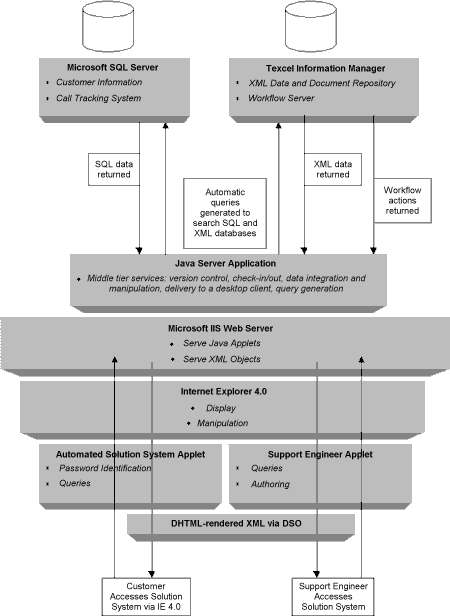

|
| ||
|
| ||
July 12, 1998
The Business Problem
The Role of XML
Solving the Problem with Texcel Information Manager and XML
Situation Overview
User Scenario
Behind the Curtain
XML Example
Information Flow Diagram
A manufacturing company has a Help Desk, where both field technicians and customers come for assistance. Today the information available at the Help Desk can vary with regard to accuracy, timeliness, completeness, and personalization. Technical fixes and workarounds are stored as whole documents on the file system, making specific topic retrieval difficult. There is no automated way to verify the integrity of the source material and to update all instances of the same information across separate documents -- or even to share the information among Help Desk personnel. In other words, there is no way to ensure that the customer is getting the right solution to his problem.
In this situation, XML enables the integration and delivery of extremely meaningful, up-to-date data -- on-demand -- versus stale, generic documents that have been previously authored and frozen. XML is a way of encoding data using tags so that it can be searched easily and interpreted consistently by any application. Text-based unstructured information now can become richer and more portable through the use of tags. Tagging data using XML gives it context, for example: <partdescription>handle</partdescription>. It also makes retrieval much more precise since searching can be specified to take place within elements/document fragments rather than on whole documents (as is the case in traditional file-based document management systems). XML tags can also be useful for describing structured information, or for describing information about documents known as meta-data.
This scenario describes a Help Desk Solution System built for a manufacturer of complex equipment. The system is built on the Texcel Information Manager content management system
from Texcel International AB (http://www.texcel.no/  ). It combines a dynamic content repository built on object database technology with applications for collaborative authoring, such as workflow electronic review and commenting. The combined database and content management system are referred to as a "knowledge base". Texcel Information Manager provides tools that manage and integrate data to provide personalized views. It also lets groups of people collaborate on the "authoring" process.
). It combines a dynamic content repository built on object database technology with applications for collaborative authoring, such as workflow electronic review and commenting. The combined database and content management system are referred to as a "knowledge base". Texcel Information Manager provides tools that manage and integrate data to provide personalized views. It also lets groups of people collaborate on the "authoring" process.
This scenario describes the production of custom "solution" documents: custom documents that describe a fix for a particular problem for a particular customer. Multiple solution documents may use the same technical data, but each document is automatically personalized for the particular customer who is experiencing the problem. Solution documents are constructed by the integration of data from various sources, including the knowledge base and relational databases.
A customer experiences a problem with a piece of equipment. He signs on to the manufacturer's Automated Solution System via the technical support channel (the Extranet) and attempts to get help. Although relevant information on the malfunctioning piece of equipment is returned, it is not a comprehensive solution, so the call is automatically routed to a Help Desk support engineer.
The Help Desk agent analyzes the existing data, talks to the customer, and figures out a fix for the problem. On his screen he already has a template that includes the customer's profile and configuration, which were automatically retrieved, as was all the data in the knowledge base about the malfunctioning part. He now writes up the technical fix he has discovered in the appropriate place using the integrated XML editor. Now the "solution document" is complete and it can be "delivered" to the customer via e-mail or posted to the Extranet.
The solution document is checked into the database so that a record of the inquiry can be stored. The new data must be reviewed and approved as part of the workflow process. Then it, too, will be "checked-in" so it can be accessed automatically the next time someone has a problem with that particular piece of equipment.
A week later another customer experiences the same problem. This time a visit to the Help System produces the customized "solution document" automatically. The system has found the precise data, including the new information that was authored the week before by the support engineer, and has combined it with the correct customer profile information to produce a new solution document.
<?xml version="1.0"?><?xml version="1.0"?> <solution id="solution-1000"> <!-- This comes from the Microsoft SQL Database --> <sqllink xml:link="simple" href="http://sqlserver//getsqlinfo?sql='select owner,date,product-type,product-name WHERE call-id = test.call.1'"> <! -- RESULTS: <solution-info> <owner>Derek Yoo</owner> <date>Sat Jan 31 22:30:50 1998</date> </solution-info> <product-grp> <product-type>SST</product-type> <product-name>Self Service Terminal 100A</product-name> </product-grp> <problem-grp> <problem-statement> Terminal 100A will not recover from a power failure. Screen remains blank after power is restored. </problem-statement> </problem-grp> --> <solution-grp> <solution-statement> <!-- This part of the solution statement is authored by the Solution Engineer --> <para>The solution is to simply turn the main power switch for the terminal off and then on again. </para> <para>Please refer to <imlink xml:link="simple" href="http://imserver//getiminfo="helpdb@tech_manual.xml#section1.child(2,para)"> Paragraph 2, Section I of Tech_Manual.xml</imlink>. </solution-statement> <testing-steps> <step></step> </testing-steps> <additional-resources> <graphiclink xml:link="simple" href="file://localfileserver/graphics/image_of_part.gif"> <weblink xml:link="simple" href="http://www.texcel.no/support"> </additional-resources> </solution-grp> </solution>

Did you find this material useful? Gripes? Compliments? Suggestions for other articles? Write us!
© 1999 Microsoft Corporation. All rights reserved. Terms of use.